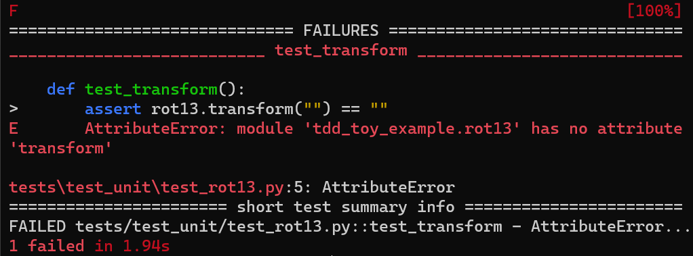
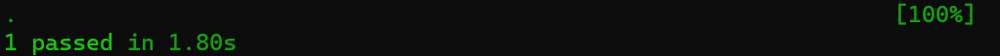
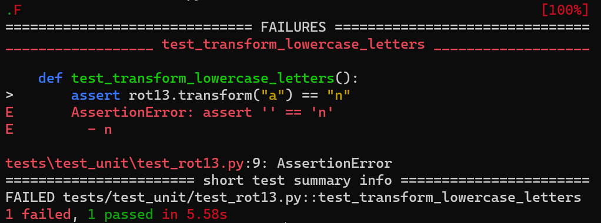
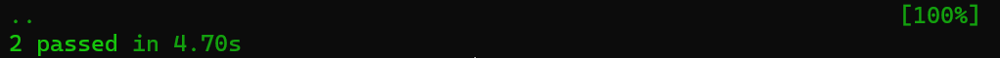
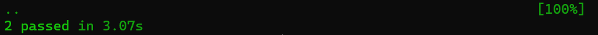
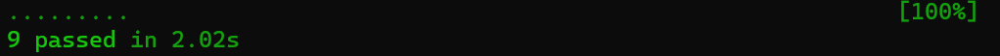
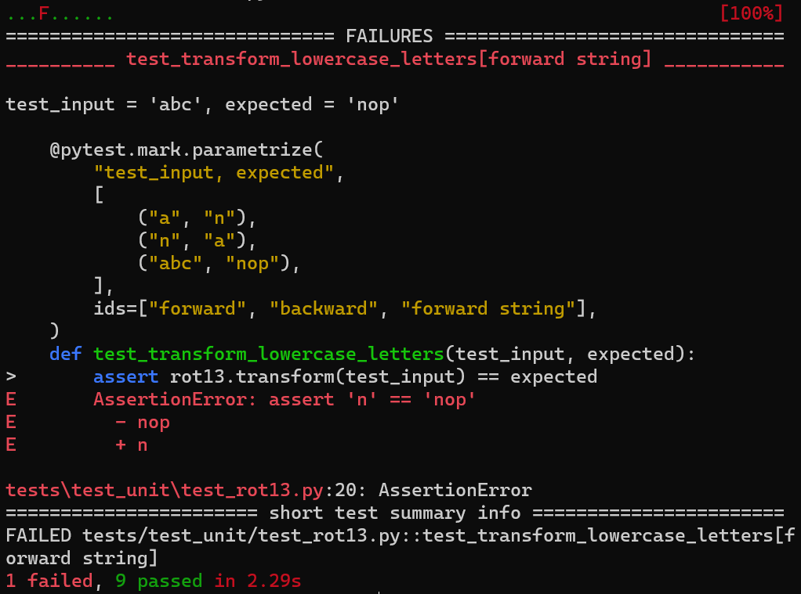
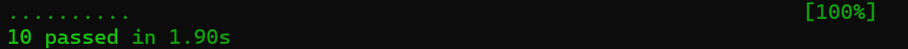
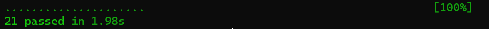

flowchart LR
A[Think] --> B[Red]
B --> C[Green]
C --> D[Refactor]
D --> C
D --> A
style B stroke:#f00
style C stroke:#04B46D
Test-Driven Development (TDD)
Chang Huan Lo
Example Scenario
Initial plan
- implement new functionality
- test at the end
Reality
- implementation takes much longer than expected
- time to test
- huge codebase to test
- pressure to ship → skimp on testing
- defects discovered this late are costly to fix
Test-Driven Development (TDD)
- software design practice developed by Kent Beck
- general workflow
Make it green, then make it clean!
Why TDD?
- self-testing code, more fault-tolerant
- rapid feedback
- clearer software APIs
- continuous refactoring → improved code quality
Where to Begin?
- Core interface
- Calculations and branches
- Loops and generalisation
- Special cases and error handling
- Runtime assertions
ZOMBIES
Test Zero, then One, then Many. While you test, pay attention to Boundaries, Interfaces, and Exceptions, all while keeping test scenarios and solutions Simple.
A TDD Example
Task
Create a ROT-13 encoding function, a simple Caesar cipher where “abc” becomes “nop” and vice versa.
1. Core interface (think, red)
## test_rot13.py
from tdd_toy_example import rot13
def test_transform():
assert rot13.transform("") == ""
1. Core interface (refactor)
## test_rot13.py
from tdd_toy_example import rot13
def test_transform_with_empty_string():
assert rot13.transform("") == "", \
"Empty string should return empty string"
2. Calculations and branches (think core logic)
- loop through a string and transform each character
- smaller step → transform one character
- even smaller?
2. Calculations and branches (think core logic, red)

2. Calculations and branches (green)
## rot13.py
def transform(input):
if input == "":
return ""
char_code = ord(input[0])
char_code += 13
return chr(char_code)
2. Calculations and branches (refactor)
## rot13.py
def transform(input):
if input == "":
return ""
# get unicode code point of first character
char_code = ord(input[0])
char_code += 13
return chr(char_code)
2. Calculations and branches (repeat)
- Lower-case letter forward: a → n ✅
- Lower-case letter backward: n → a
- First character before “a” doesn’t rotate: ` → `
- First character after “z” doesn’t rotate: { → {
- Upper-case letters forward: A → N
- Upper-case letters backward: N → A
- More boundary cases: @ → @ and [ → [
2. Calculations and branches (repeat)
## test_rot13.py
import pytest
from tdd_toy_example import rot13
def test_transform_empty_string():
assert rot13.transform("") == "", \
"Empty string should return empty string"
@pytest.mark.parametrize(
"test_input, expected",
[
("a", "n"),
("n", "a"),
],
ids=["forward", "backward"],
)
def test_transform_lowercase_letters(test_input, expected):
assert rot13.transform(test_input) == expected
@pytest.mark.parametrize(
"test_input, expected",
[
("A", "N"),
("N", "A"),
],
ids=["forward", "backward"],
)
def test_transform_uppercase_letters(test_input, expected):
assert rot13.transform(test_input) == expected
@pytest.mark.parametrize(
"test_input,expected",
[
("`", "`"),
("{", "{"),
("@", "@"),
("[", "["),
],
)
def test_transform_symbols(test_input, expected):
assert rot13.transform(test_input) == expected
3. Loops and generalisation (think handle full strings, red)

3. Loops and generalisation (green)
## rot13.py
def transform(input):
if input == "":
return ""
output = ""
for letter in input:
output += transform_letter(letter)
return output
def transform_letter(letter):
if not letter.isalpha():
return letter
# convert input to lowercase
input_lower = letter.lower()
# get unicode code point of first character
char_code = ord(input_lower)
if char_code >= ord("n"):
char_code -= 13
else:
char_code += 13
output = chr(char_code)
return output.upper() if letter.isupper() else output
…repeat
4. Special cases, error handling, runtime assertions
- no parameter provided
- wrong parameter type provided
- numbers
- non-English letters
- emojis
## test_rot13.py
import pytest
from tdd_toy_example import rot13
def test_transform_empty_string():
assert rot13.transform("") == "", \
"Empty string should return empty string"
@pytest.mark.parametrize(
"test_input, expected",
[
("a", "n"),
("n", "a"),
("abcdefghijklmnopqrstuvwxyz", "nopqrstuvwxyzabcdefghijklm"),
],
ids=["forward", "backward", "string"],
)
def test_transform_lowercase_letters(test_input, expected):
assert rot13.transform(test_input) == expected
@pytest.mark.parametrize(
"test_input, expected",
[
("A", "N"),
("N", "A"),
("ABCDEFGHIJKLMNOPQRSTUVWXYZ", "NOPQRSTUVWXYZABCDEFGHIJKLM"),
],
ids=["forward", "backward", "string"],
)
def test_transform_uppercase_letters(test_input, expected):
assert rot13.transform(test_input) == expected
@pytest.mark.parametrize("test_input", ["`", "{", "@", "[", "`{@["])
def test_transform_symbols(test_input):
assert rot13.transform(test_input) == test_input
def test_transform_numbers():
assert rot13.transform("0123456789") == "0123456789"
@pytest.mark.parametrize("test_input", ["äöüßéñç", "ÄÖÜẞÉÑÇ"])
def test_transform_non_english_letters(test_input):
assert rot13.transform(test_input) == test_input
@pytest.mark.parametrize("test_input", ["👍", "💁", "👌", "😍"])
def test_transform_emoji_string(test_input):
assert rot13.transform(test_input) == test_input
def test_transform_no_parameter():
with pytest.raises(TypeError, match="Expected string parameter"):
rot13.transform()
def test_transform_wrong_parameter_type():
with pytest.raises(TypeError, match="Expected string parameter"):
rot13.transform(1)
## rot13.py
def transform(input=None):
print(type(input))
if input is None or not isinstance(input, str):
raise TypeError("Expected string parameter")
if input == "":
return ""
output = ""
for letter in input:
output += transform_letter(letter)
return output
def transform_letter(letter):
if is_non_english_letter(letter):
return letter
# convert input to lowercase
input_lower = letter.lower()
# get unicode code point of first character
char_code = ord(input_lower)
if char_code >= ord("n"):
char_code -= 13
else:
char_code += 13
output = chr(char_code)
return output.upper() if letter.isupper() else output
def is_non_english_letter(letter):
return not letter.isascii() or not letter.isalpha()TDD Summary
- Focus on code design
- Small increments
- Short feedback loops
- Continuous refactoring
Further Reading
- Astels, D. (2003). Test-driven development: A practical guide
- Beck, K. (2002). Test driven development: By example
- Shore, J., & Warden, S. (2021). The art of agile development: Test-driven development
References
- Grenning, J. (2016). TDD guided by ZOMBIES
- Martin, R.C. (2014). The clean code blog: The cycles of TDD
- Shore, J., & Warden, S. (2021). The art of agile development: Test-driven development
- Steinfeld, G. (2020). 5 Steps of test-driven development
NIU team meeting | 2023-10-27